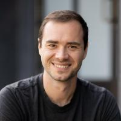

AI 패러다임의 나침반이자 사상가
학문적 뿌리부터 OpenAI 창립과 테슬라 오토파일럿 총괄, 유레카 랩스 창업을 거쳐 2026년 5월 앤스로픽(Anthropic) 합류까지. 그가 주창한 Software 3.0과 에이전틱 엔지니어링 시대의 생존 전략을 분석합니다.
불확실성에 기반해 억측 코딩하지 않고, 모호함을 명시적으로 드러내어 사용자에게 트레이드오프 질문.
오버엔지니어링, 과도한 예외 처리, 불필요한 설정 추가를 금지하고 200줄의 복잡한 구조를 50줄로 다이어트.
주변의 불필요한 포맷이나 스타일을 함부로 교정하지 않고, 오직 요구된 핵심 영역만 정확하고 날카롭게 수정.
막연한 요구 대신 단계별 성공 기준을 스스로 정의하고, 단계마다 검증 테스트 루프를 거쳐 전진.
"어떻게(How) 구현하고 작성할 것인가"의 가치는 지능형 에이전트가 가져갔습니다.
이제 인간은 "무엇을(What) 만들 것이며, 왜(Why) 해야 하는가"에 대해 답해야 합니다.
AI 시대에 마지막까지 대체되지 않고 살아남는 차별점은 오직 인간만의 독자적인 취향, 실존적 결단(의지), 그리고 결과에 대한 책임뿐입니다.
본 발표자료의 모태가 되는 LLM Wiki의 상세 분석 내용과 원문 문서 정보는 옵시디언 위키 내의 아래 딥링크를 통해 직접 탐색할 수 있습니다.